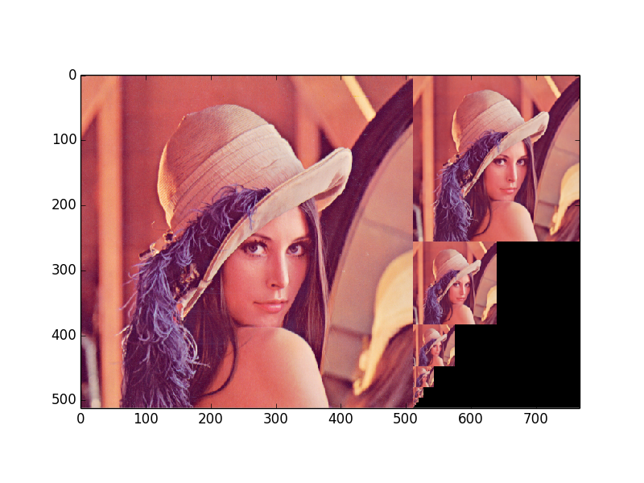

The pyramid_gaussian function takes an image and yields successive images shrunk by a constant scale factor. Image pyramids are often used, e.g., to implement algorithms for denoising, texture discrimination, and scale- invariant detection.

import numpy as np
import matplotlib.pyplot as plt
from skimage import data
from skimage.transform import pyramid_gaussian
image = data.lena()
rows, cols, dim = image.shape
pyramid = tuple(pyramid_gaussian(image, downscale=2))
composite_image = np.zeros((rows, cols + cols / 2, 3), dtype=np.double)
composite_image[:rows, :cols, :] = pyramid[0]
i_row = 0
for p in pyramid[1:]:
n_rows, n_cols = p.shape[:2]
composite_image[i_row:i_row + n_rows, cols:cols + n_cols] = p
i_row += n_rows
fig, ax = plt.subplots()
ax.imshow(composite_image)
plt.show()

STDOUT
STDERR
Python source code: download (generated using skimage 0.11dev)
IPython Notebook: download (generated using skimage 0.11dev)